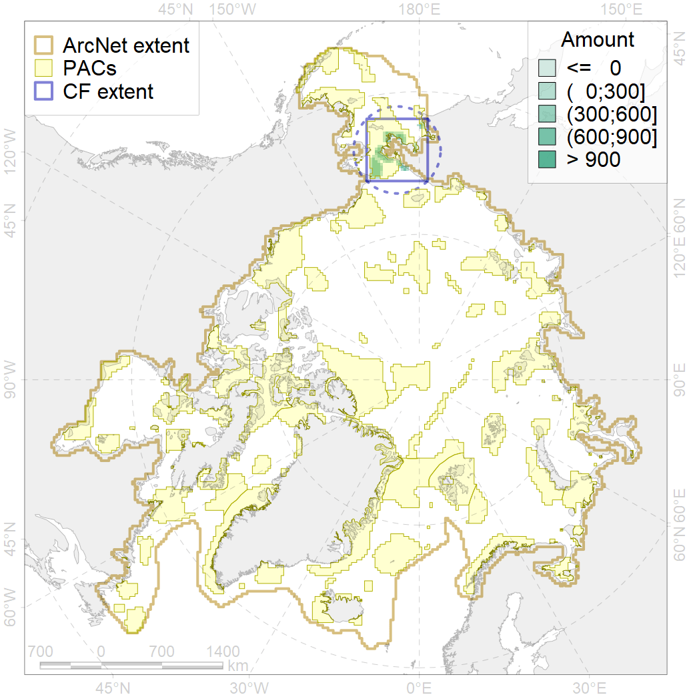
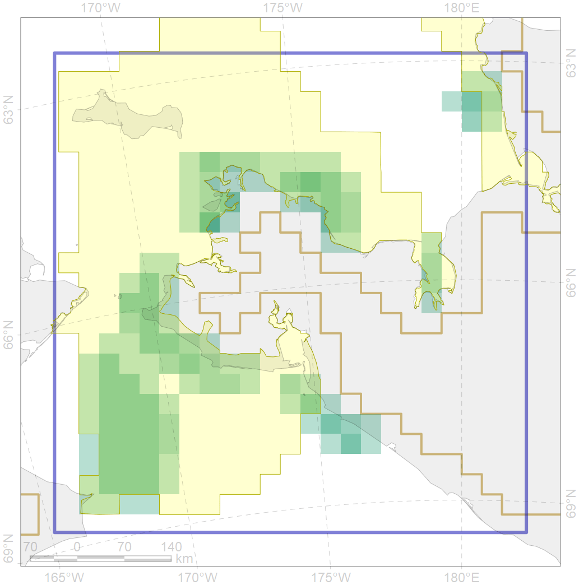

5062

| CF code | 5062 |
| CF name | Humpback whale summer feeding areas in the Pacific Arctic |
| Time Period | 2004-2017 |
| Source(s) | Calambokidis et al 2008; Melnikov 2012; Clarke et al 2013; Ovsyanikova 2016 cruise; Burdin 2017 survey; Filatova 2017, 2018 surveys |
| Seasonality | June-September |
| Depth Horizon | 0-300 |
| Methodology | Ship surveys |
| Use Restrictions | |
| Author Name | Filatova |
| Notes | |
| Scenario’s Target | 0.24 |
| Target Achievement | 0.867 (Scenario: 361.1%) |
| PAC | Share of the Total Amount within the PAC | Share of the Target Achievement for the ArcNet | PAC’s Contribution to the Target Achievement |
|---|---|---|---|
| 4 | 1.7%1.7% | 3.8%4.0% | 1.1%1.1% |
| 5 | 83.5%88.6% | 331.4%351.2% | 91.8%97.3% |
| inner | 85.1%90.3% | 335.2%355.2% | 92.8%98.4% |
| outer | 14.9%31.3% | 25.9%86.7% | 7.2%24.0% |
| † supplement values are for area consistence whereas principal values are for Accenter compatible gridded stats |